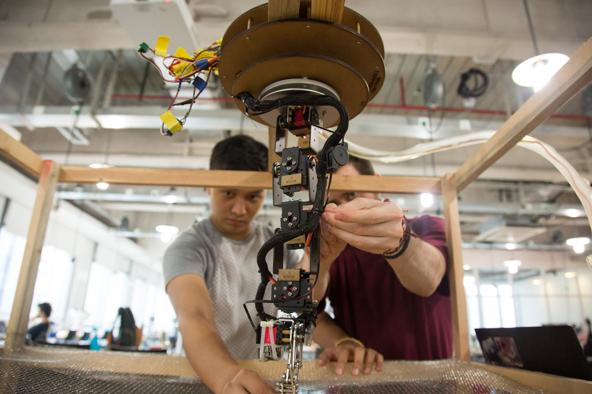
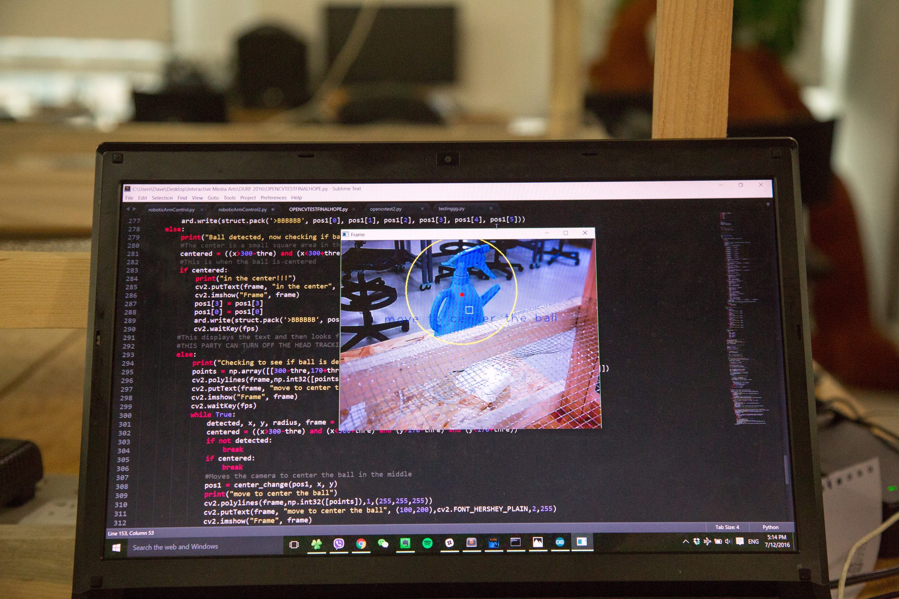

Seeing Assistive Robotic Arm
├── Vision -> Computer Vision / Color Detection
└── Control -> Head Mouse / Head Tracking
• Head-controlled robotics
• Computer vision object detection
• Accessibility-focused design

Assistive robotic arm prototype setup
The assistive robotic arm was an exploration into finding new and simple ways for robotics to be used in assistive tech. This is both a working prototype and a proof of concept, just a simple robotic arm with a webcam attached to it, using computer vision, an arduino, and software called head mouse to find and then grab certain objects. With this you can control and move the robotic arm with just the use of your head.

Head-controlled operation demonstration

Computer vision processing with crosshair overlay
A bit of a peek into how the computer was processing the video feed. We drew a small crosshair as an overlay in order to visualize what areas of the feed were being detected. If the color it was looking for was not fully centered, the arm would send instructions to the micro-controller to move and center accordingly.

Final hardware assembly